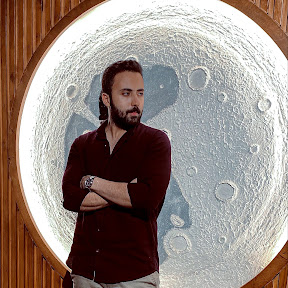
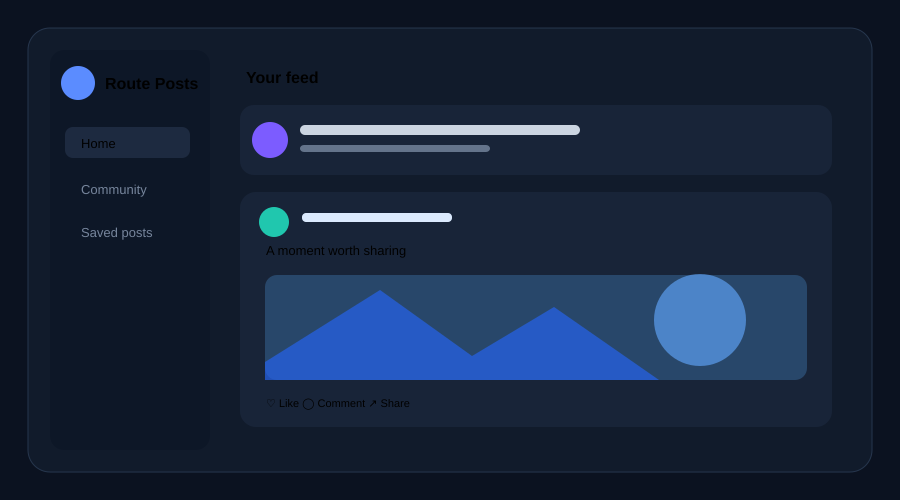
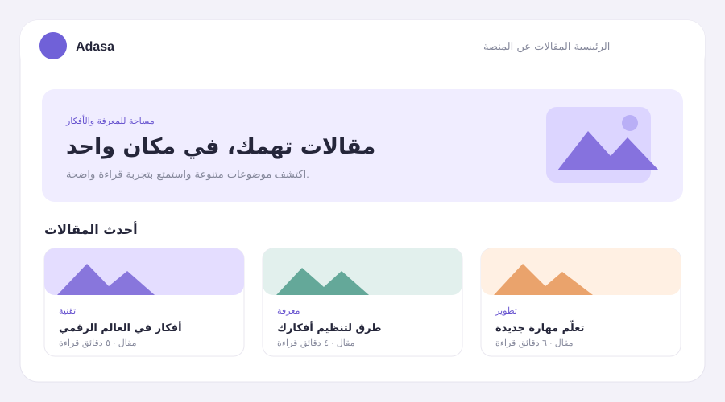
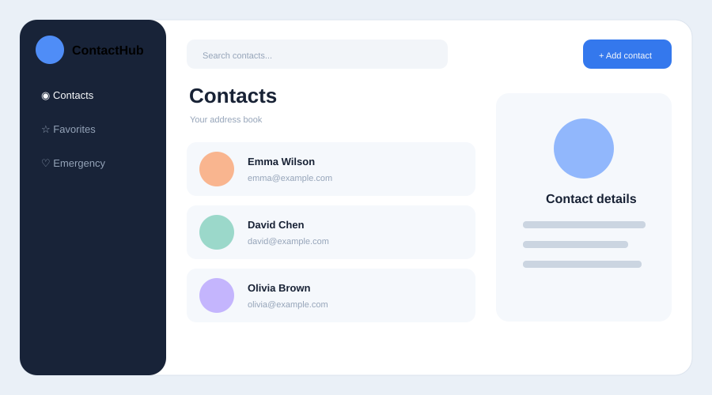
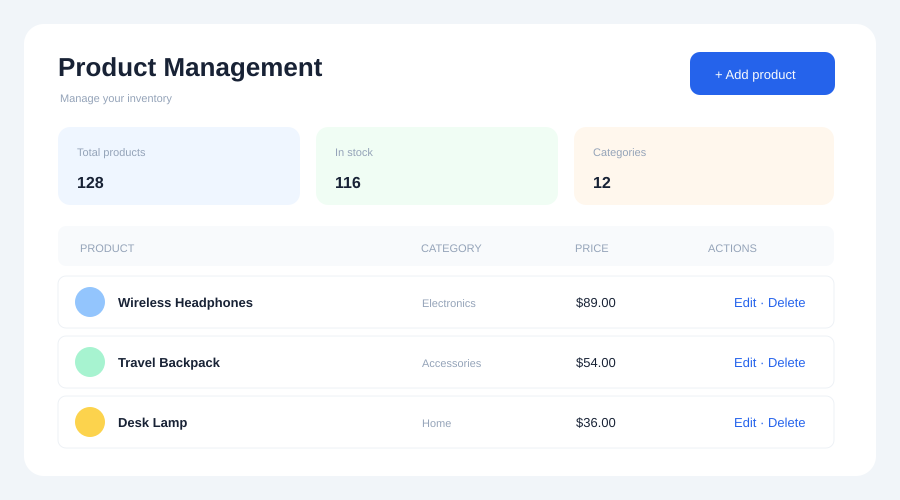
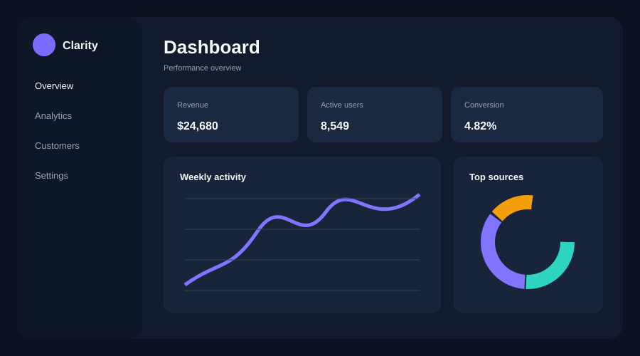
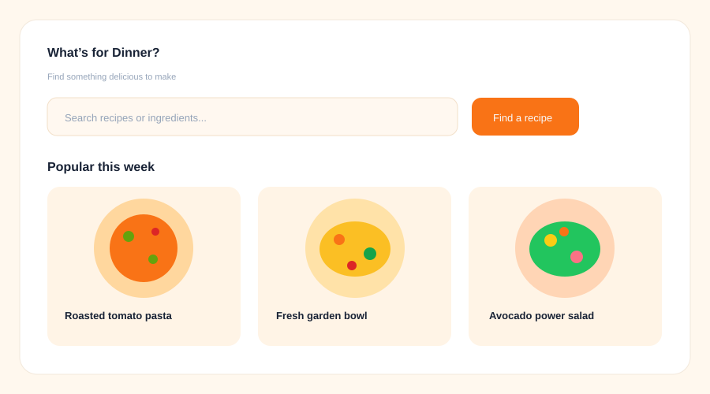
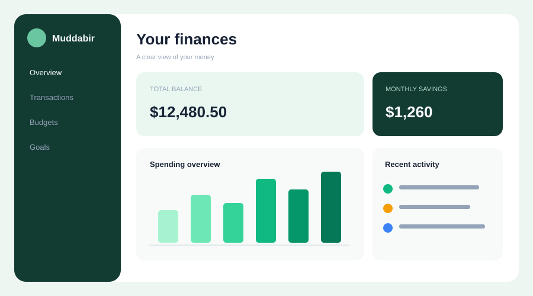
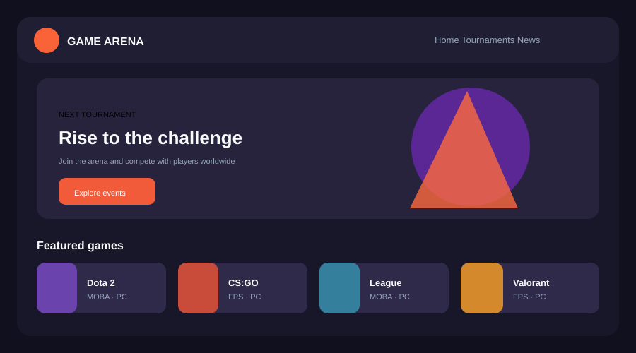

HTML & CSS
إنشاء هياكل صفحات واضحة وتنسيقها لتناسب أحجام الشاشات المختلفة.
مرحباً، أنا 👋
بشتغل على تحويل الأفكار إلى واجهات ويب واضحة. وأطوّر مهاراتي في HTML وCSS وJavaScript وReact وNext.js.

أنا مطور واجهات أمامية في بداية مسيرتي، أتعلم تقنيات الويب وأطبّقها في مشاريع عملية.
مهتم ببناء واجهات واضحة ومتجاوبة، وبطوّر مستواي باستمرار من خلال تنفيذ أفكار ومشاريع جديدة.
إنشاء هياكل صفحات واضحة وتنسيقها لتناسب أحجام الشاشات المختلفة.
إضافة التفاعل والسلوك الديناميكي إلى صفحات الويب.
بناء واجهات تفاعلية باستخدام المكونات وإدارة الحالة الأساسية.
التدرب على بناء تطبيقات ويب باستخدام إطار React.
تنسيق الواجهات باستخدام utility classes.
إنشاء تخطيطات وعناصر واجهة متجاوبة.








أطوّر مهاراتي في تطوير الواجهات من خلال تطبيق ما أتعلمه على مشاريع عملية، مع التركيز على بناء واجهات متجاوبة، وتحسين تجربة المستخدم، وكتابة كود منظم.
أحوّل ما أتعلمه إلى مشاريع قابلة للتجربة.
أهتم بالتجاوب وسهولة الاستخدام والتفاصيل البصرية.
أواصل التعلم بالممارسة ومراجعة الكود وتحسينه.
مشاريع معروضة
تقنيات أتعلمها
من تقنياتي
مجال تركيزي
يسعدني التواصل لمناقشة مشاريع الواجهات الأمامية وفرص التعلم والتعاون.
تواصل معي على GitHub